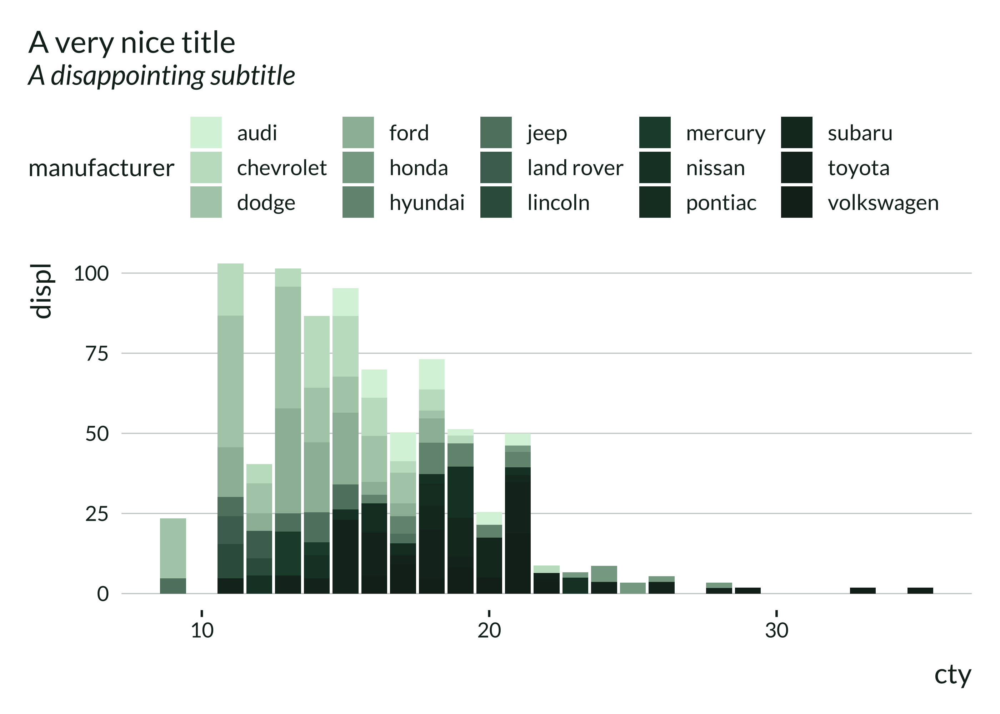
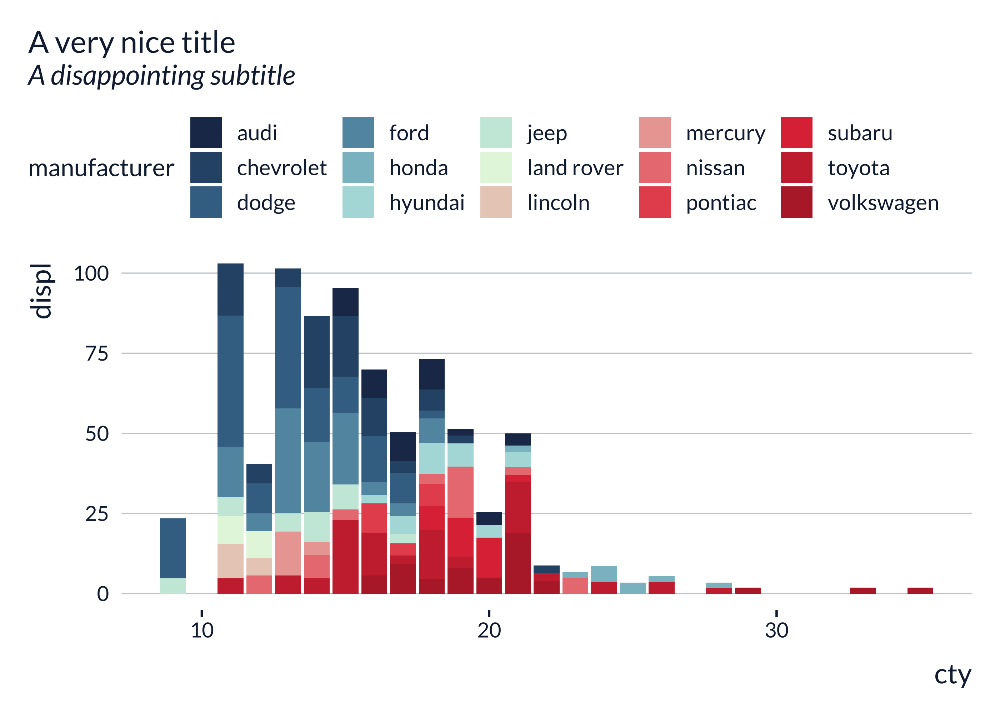

This package provides not particularly nice and, hopefully, not particularly ugly ggplot themes.
Installation
You can install the development version of mediocrethemes from GitHub with:
# install.packages("devtools")
devtools::install_github("vincentbagilet/mediocrethemes")Note that you may need to restart your R session once the installation is complete to be able to use the package. You will also need an active internet connection the first time you call set_mediocre_all or theme_mediocre.
Usage
This package provides both a ggplot theme and a color palette.
Users can set the theme and color palette for all plots in a document with the function set_mediocre_all placed at the top of their document:
library(ggplot2)
library(mediocrethemes)
set_mediocre_all()
ggplot(data = ggplot2::mpg, aes(x = cty, y = displ, fill = manufacturer)) +
geom_col() +
labs(title = "A very nice title", subtitle = "A disappointing subtitle")
#> Warning: The `scale_name` argument of `discrete_scale()` is deprecated as of ggplot2
#> 3.5.0.
#> This warning is displayed once every 8 hours.
#> Call `lifecycle::last_lifecycle_warnings()` to see where this warning was
#> generated.
Users also can set the theme and color palette independently.
ggplot(data = ggplot2::mpg, aes(x = cty, y = displ)) +
geom_point() +
theme_mediocre() +
scale_mediocre_d() +
labs(title = "A very nice title", subtitle = "A disappointing subtitle")
Examples


Additional palettes
Note that additional palettes are available: autumn, rainbow, green, hotcold, blackandwhite, coty, leo, portal, pem.





Most palettes are divergent but can be turned into two gradient palettes, as described in the vignette.